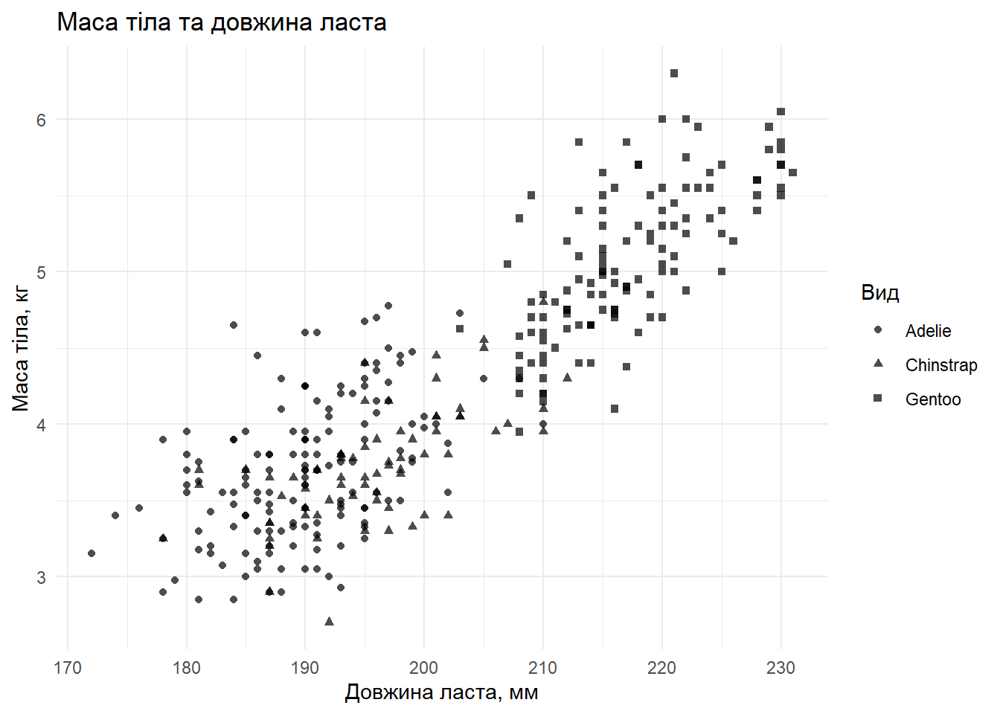

Code
#install.packages(c("dplyr", "readr", "ggplot2", "knitr", "palmerpenguins"))
library(dplyr)
library(readr)
library(ggplot2)
library(knitr)
library(palmerpenguins)Мета: Опанувати базовий відтворюваний workflow Data Science-проєкту в екосистемі R–RStudio–Quarto–Git: створити структурований проєкт, отримати дані, виконати їх первинний аудит і підготовку, зберегти підготовлений набір даних та сформувати відтворюваний аналітичний звіт.
#install.packages(c("dplyr", "readr", "ggplot2", "knitr", "palmerpenguins"))
library(dplyr)
library(readr)
library(ggplot2)
library(knitr)
library(palmerpenguins)dir.create("data", showWarnings = FALSE)
dir.create("data/raw", recursive = TRUE, showWarnings = FALSE)
dir.create("data/processed", recursive = TRUE, showWarnings = FALSE)
dir.create("figures", showWarnings = FALSE)Тут для відтворюваності прикладу використаємо набір penguins, що постачається разом із пакетом palmerpenguins.
raw_path <- "data/raw/penguins.csv"
if(!file.exists(raw_path)){
readr::write_csv(
palmerpenguins::penguins,
raw_path,
na = ""
)
}penguins_raw <- read_csv(
raw_path,
show_col_types = FALSE
)
dplyr::glimpse(penguins_raw)Rows: 344
Columns: 8
$ species <chr> "Adelie", "Adelie", "Adelie", "Adelie", "Adelie", "A…
$ island <chr> "Torgersen", "Torgersen", "Torgersen", "Torgersen", …
$ bill_length_mm <dbl> 39.1, 39.5, 40.3, NA, 36.7, 39.3, 38.9, 39.2, 34.1, …
$ bill_depth_mm <dbl> 18.7, 17.4, 18.0, NA, 19.3, 20.6, 17.8, 19.6, 18.1, …
$ flipper_length_mm <dbl> 181, 186, 195, NA, 193, 190, 181, 195, 193, 190, 186…
$ body_mass_g <dbl> 3750, 3800, 3250, NA, 3450, 3650, 3625, 4675, 3475, …
$ sex <chr> "male", "female", "female", NA, "female", "male", "f…
$ year <dbl> 2007, 2007, 2007, 2007, 2007, 2007, 2007, 2007, 2007…knitr::kable(
head(penguins_raw),
caption = "Перші рядки сирого набору даних"
)| species | island | bill_length_mm | bill_depth_mm | flipper_length_mm | body_mass_g | sex | year |
|---|---|---|---|---|---|---|---|
| Adelie | Torgersen | 39.1 | 18.7 | 181 | 3750 | male | 2007 |
| Adelie | Torgersen | 39.5 | 17.4 | 186 | 3800 | female | 2007 |
| Adelie | Torgersen | 40.3 | 18.0 | 195 | 3250 | female | 2007 |
| Adelie | Torgersen | NA | NA | NA | NA | NA | 2007 |
| Adelie | Torgersen | 36.7 | 19.3 | 193 | 3450 | female | 2007 |
| Adelie | Torgersen | 39.3 | 20.6 | 190 | 3650 | male | 2007 |
dim(penguins_raw)[1] 344 8str(penguins_raw)spc_tbl_ [344 × 8] (S3: spec_tbl_df/tbl_df/tbl/data.frame)
$ species : chr [1:344] "Adelie" "Adelie" "Adelie" "Adelie" ...
$ island : chr [1:344] "Torgersen" "Torgersen" "Torgersen" "Torgersen" ...
$ bill_length_mm : num [1:344] 39.1 39.5 40.3 NA 36.7 39.3 38.9 39.2 34.1 42 ...
$ bill_depth_mm : num [1:344] 18.7 17.4 18 NA 19.3 20.6 17.8 19.6 18.1 20.2 ...
$ flipper_length_mm: num [1:344] 181 186 195 NA 193 190 181 195 193 190 ...
$ body_mass_g : num [1:344] 3750 3800 3250 NA 3450 ...
$ sex : chr [1:344] "male" "female" "female" NA ...
$ year : num [1:344] 2007 2007 2007 2007 2007 ...
- attr(*, "spec")=
.. cols(
.. species = col_character(),
.. island = col_character(),
.. bill_length_mm = col_double(),
.. bill_depth_mm = col_double(),
.. flipper_length_mm = col_double(),
.. body_mass_g = col_double(),
.. sex = col_character(),
.. year = col_double()
.. )
- attr(*, "problems")=<pointer: 0x000001f6e47e7cb0> missing_summary <- penguins_raw |>
summarise(
across(
everything(),
~ sum(is.na(.x))
)
) |>
tidyr::pivot_longer(
cols = everything(),
names_to = "variable",
values_to = "n_missing"
) |>
arrange(desc(n_missing))
knitr::kable(
missing_summary,
caption = "Кількість пропущених значень за змінними"
)| variable | n_missing |
|---|---|
| sex | 11 |
| bill_length_mm | 2 |
| bill_depth_mm | 2 |
| flipper_length_mm | 2 |
| body_mass_g | 2 |
| species | 0 |
| island | 0 |
| year | 0 |
n_dublicates <- sum(duplicated(penguins_raw))
n_dublicates[1] 0summary(penguins_raw) species island bill_length_mm bill_depth_mm
Length :344 Length :344 Min. :32.10 Min. :13.10
N.unique : 3 N.unique : 3 1st Qu.:39.23 1st Qu.:15.60
N.blank : 0 N.blank : 0 Median :44.45 Median :17.30
Min.nchar: 6 Min.nchar: 5 Mean :43.92 Mean :17.15
Max.nchar: 9 Max.nchar: 9 3rd Qu.:48.50 3rd Qu.:18.70
Max. :59.60 Max. :21.50
NAs :2 NAs :2
flipper_length_mm body_mass_g sex year
Min. :172.0 Min. :2700 Length :344 Min. :2007
1st Qu.:190.0 1st Qu.:3550 N.unique : 2 1st Qu.:2007
Median :197.0 Median :4050 N.blank : 0 Median :2008
Mean :200.9 Mean :4202 Min.nchar: 4 Mean :2008
3rd Qu.:213.0 3rd Qu.:4750 Max.nchar: 6 3rd Qu.:2009
Max. :231.0 Max. :6300 NAs : 11 Max. :2009
NAs :2 NAs :2 penguins_clean <- penguins_raw |>
select(
species,
island,
bill_length_mm,
bill_depth_mm,
flipper_length_mm,
body_mass_g,
sex
) |>
filter(
!is.na(species),
!is.na(bill_length_mm),
!is.na(bill_depth_mm),
!is.na(flipper_length_mm),
!is.na(body_mass_g)
)|>
mutate(
body_mass_kg = body_mass_g / 1000,
species = factor(species),
island = factor(island),
sex = factor(sex)
)
dplyr::glimpse(penguins_clean)Rows: 342
Columns: 8
$ species <fct> Adelie, Adelie, Adelie, Adelie, Adelie, Adelie, Adel…
$ island <fct> Torgersen, Torgersen, Torgersen, Torgersen, Torgerse…
$ bill_length_mm <dbl> 39.1, 39.5, 40.3, 36.7, 39.3, 38.9, 39.2, 34.1, 42.0…
$ bill_depth_mm <dbl> 18.7, 17.4, 18.0, 19.3, 20.6, 17.8, 19.6, 18.1, 20.2…
$ flipper_length_mm <dbl> 181, 186, 195, 193, 190, 181, 195, 193, 190, 186, 18…
$ body_mass_g <dbl> 3750, 3800, 3250, 3450, 3650, 3625, 4675, 3475, 4250…
$ sex <fct> male, female, female, female, male, female, male, NA…
$ body_mass_kg <dbl> 3.750, 3.800, 3.250, 3.450, 3.650, 3.625, 4.675, 3.4…Кількість спостережень до і після підготовки.
data.frame(
dataset = c("raw", "processed"),
n_rows = c(nrow(penguins_raw), nrow(penguins_clean))
) |>
knitr::kable(
caption = "Кількість спостережень до і після первинної підготовки"
)| dataset | n_rows |
|---|---|
| raw | 344 |
| processed | 342 |
processed_path <- "data/processed/penguins_clean.csv"
readr::write_csv(
penguins_clean,
processed_path,
na = ""
)penguins_clean |>
ggplot(
aes(
x = flipper_length_mm,
y = body_mass_kg,
shape = species
)
) +
geom_point(alpha = 0.7) +
labs(
title = "Маса тіла та довжина ласта",
x = "Довжина ласта, мм",
y = "Маса тіла, кг",
shape = "Вид"
) +
theme_minimal()
sessionInfo()R version 4.6.2 (2026-10-29 ucrt)
Platform: x86_64-w64-mingw32/x64
Running under: Windows 10 x64 (build 19044)
Matrix products: default
LAPACK version 3.12.1
locale:
[1] LC_COLLATE=Russian_Russia.utf8 LC_CTYPE=Russian_Russia.utf8
[3] LC_MONETARY=Russian_Russia.utf8 LC_NUMERIC=C
[5] LC_TIME=Russian_Russia.utf8
time zone: Europe/Kiev
tzcode source: internal
attached base packages:
[1] stats graphics grDevices utils datasets methods base
other attached packages:
[1] palmerpenguins_0.1.1 knitr_1.52 ggplot2_4.0.3
[4] readr_2.2.0 dplyr_1.2.1
loaded via a namespace (and not attached):
[1] bit_4.6.0 gtable_0.3.6 jsonlite_2.0.0 crayon_1.5.3
[5] compiler_4.6.2 tidyselect_1.2.1 parallel_4.6.2 tidyr_1.3.2
[9] scales_1.4.0 yaml_2.3.12 fastmap_1.2.0 R6_2.6.1
[13] labeling_0.4.3 generics_0.1.4 tibble_3.3.1 pillar_1.11.1
[17] RColorBrewer_1.1-3 tzdb_0.5.0 rlang_1.3.0 xfun_0.62
[21] S7_0.2.2 bit64_4.8.6 otel_0.3.0 cli_3.6.6
[25] withr_3.0.3 magrittr_2.0.5 digest_0.6.39 grid_4.6.2
[29] vroom_1.7.1 rstudioapi_0.19.0 hms_1.1.4 lifecycle_1.0.5
[33] vctrs_0.7.3 evaluate_1.0.5 glue_1.8.1 farver_2.1.2
[37] purrr_1.2.2 rmarkdown_2.32 tools_4.6.2 pkgconfig_2.0.3
[41] htmltools_0.5.9